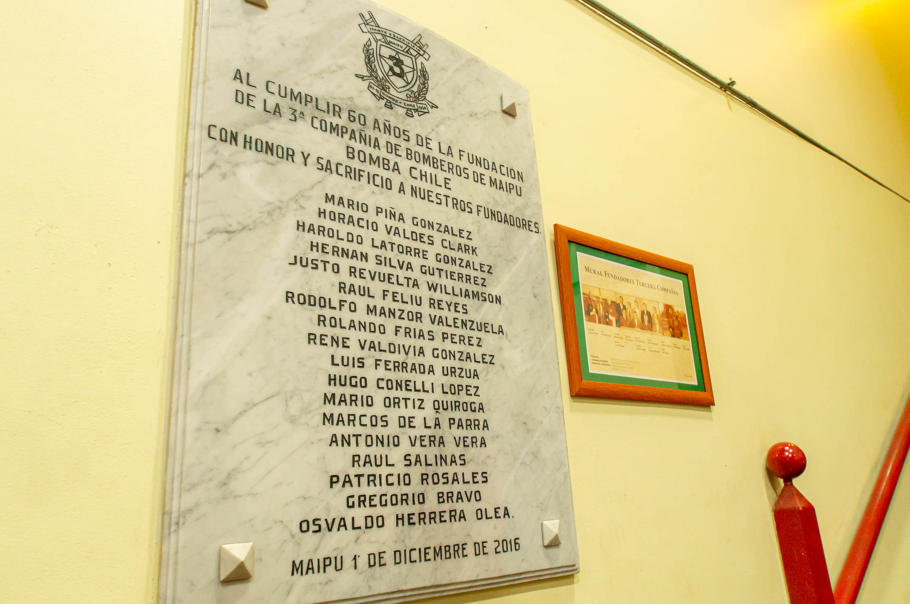

HISTORIA TERCERA COMPAÑIA
Conoce Nuestra Historia
La Tercera Compañía de Bomberos de Maipú es una organización de bomberos voluntarios fundada el 1 de diciembre de 1956 en la comuna de Maipú, Región Metropolitana, Chile. Su misión principal es brindar servicios de respuesta a emergencias, luchar contra incendios y promover la seguridad en la comunidad local. Hitos de Nuestra Compañía
Durante sus seis décadas de historia, la Tercera Compañía ha logrado importantes hitos entre los cuales se encuentran:
- Hito 1: Adquisición de equipos modernos de lucha contra incendios.
- Hito 2: Participación en numerosas operaciones de rescate.
- Hito 3: Colaboración en eventos de capacitación para bomberos.
Historia de Nuestro Cuartel
Desde su fundación, el cuartel de la Tercera Compañía de Bomberos de Maipú ha ocupado un lugar central en las operaciones de la organización. Este edificio emblemático ha sido testigo de décadas de servicio inquebrantable y valentía por parte de los bomberos voluntarios de Maipú.
A lo largo de los años, el cuartel ha sido sometido a renovaciones y mejoras continuas para adaptarse a las cambiantes necesidades de la compañía. Estas renovaciones han permitido a la Tercera Compañía mantenerse al día con los avances en tecnología y equipamiento de lucha contra incendios, garantizando así que estén preparados para cualquier desafío que se les presente.
Hoy en día, el cuartel es mucho más que un edificio; es un símbolo de la dedicación y el compromiso inquebrantable de la Tercera Compañía con la seguridad de la comunidad de Maipú. Es desde este lugar que los bomberos se preparan para responder a emergencias, se coordinan las operaciones de rescate y se almacenan los valiosos equipos utilizados para salvaguardar vidas y propiedades.
El cuartel es un recordatorio constante de la valentía de los bomberos voluntarios de Maipú y su disposición a arriesgar sus vidas para proteger a sus conciudadanos. Es un punto de orgullo para la comunidad y un faro de esperanza en tiempos de crisis.
